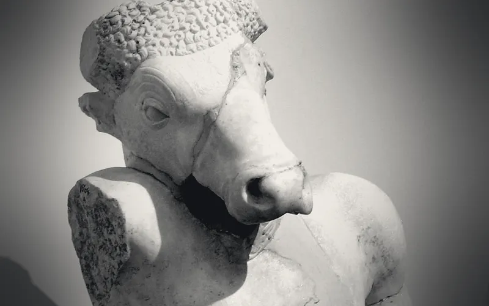

O touro de Poseidon
Minos pediu um sinal a Poseidon e prometeu sacrificar o touro que saísse do mar. Gostou tanto do animal que ficou com ele, e o deus, irritado, fez Pasífae se apaixonar pelo touro.
Apolodoro, Biblioteca III
CRIATURAΜινώταυρος
Filho de Pasífae, rainha de Creta, com um touro que saiu do mar. Tinha corpo de homem e cabeça de touro. O rei Minos o prendeu no Labirinto que Dédalo construiu.
Que nota você dá? Clique nos cerberinhos:
 1 ★
2 ★
3 ★
4 ★
5 ★
1 ★
2 ★
3 ★
4 ★
5 ★
Ele passou a vida inteira preso atrás de uma porta. Eu passei a minha guardando uma. Não sei qual dos dois tem o trabalho mais solitário.
Minos pediu um sinal a Poseidon e prometeu sacrificar o touro que saísse do mar. Gostou tanto do animal que ficou com ele, e o deus, irritado, fez Pasífae se apaixonar pelo touro.
Apolodoro, Biblioteca IIIPara esconder o Minotauro, Minos pediu a Dédalo uma prisão. O inventor fez corredores tão confusos que ele mesmo quase não achou a saída.
Ovídio, Metamorfoses VIIITeseu entrou no Labirinto com um novelo que a princesa Ariadne lhe deu. Matou o Minotauro e voltou seguindo o fio até a porta.
Conhecer Teseu →“Dédalo, famoso pelo seu talento, constrói a obra e confunde as marcas do caminho.”
Ovídio, Metamorfoses VIII (tradução livre)